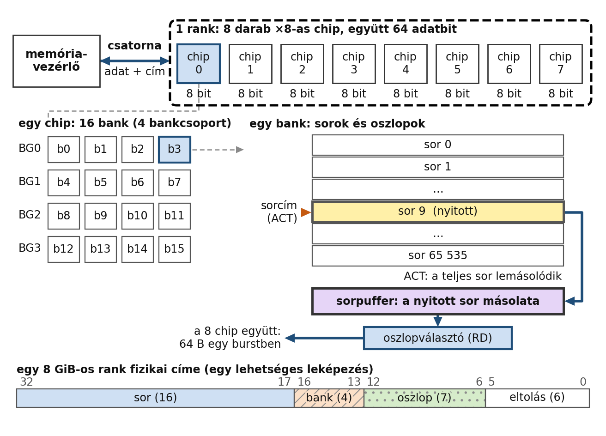

A mérőgépen (i5-13400F, 2026-11-25) egy 256 MiB-os pufferben véletlen
sorrendű mutatóláncot (chase) követve egy elérés mediánja
77,5 ns egy teljesítménymagon. A mag órajele körülbelül 4,5 GHz, tehát
egyetlen betöltés nagyságrendileg 350 ciklusig tart, miközben egy
L1-találat 1,1 ns. Ez a memóriafal (Rétegek a
tranzisztortól a programig, Lokalitás és a
memóriahierarchia).
Ugyanezen a memórián a sorrendben bejárt lánc egy elérése 3,1 ns. A különbség nagy részét a prefetch és a cache magyarázza, de a memóriachip sem egyformán gyors: attól függően, mit olvastunk belőle utoljára, ugyanaz az olvasás az alábbi oktatási modellben 16,5 vagy 44,5 ns. Megnézzük, honnan jön ez a különbség, és miért kell a DRAM-nak akkor is dolgoznia, amikor senki nem kér tőle semmit.
Képzeljünk el egy raktárost, aki nem tud egyetlen dobozt leemelni: egy egész polcsort húz ki a munkaasztalra. Ha a következő kérés ugyanabból a sorból való, csak az asztalra kell nyúlnia; ha másikból, előbb vissza kell tolnia a mostanit.
A DRAM (dynamic random-access memory, dinamikus memória) pontosan így működik. A „polcsor” a sor (row), a „munkaasztal” a sorpuffer (row buffer), a raktár egy-egy önálló egysége a bank. Az ábra a teljes hierarchiát mutatja a memóriavezérlőtől egy bank egyetlen soráig.

Az ábrán először egy teljes sor kerül a sorpufferbe, és csak utána választ ki belőle az oszlopválasztó néhány bájtot; a két külön lépésből jön a háromféle késleltetés.
Az SRAM-cella (Tárolóelemek: latch, flip-flop, regiszter, SRAM) hat tranzisztorból álló visszacsatolt kör: amíg van táp, megtartja a bitet. A DRAM-cella ennél sokkal kisebb: egy tranzisztor és egy kondenzátor (1T1C). A kondenzátor töltése jelenti a bitet, a tranzisztor pedig kapcsoló, amely a cellát a bitvonalra (az oszlop közös vezetékére) köti, ha a sort kiválasztó vezeték aktív. A kicsi cella olcsó, nagy memóriát ad, de három következménye van [S-DREPPER].
Egy banknyi erősítő egyszerre egy teljes sort tart: ez a sorpuffer. Gyors, de csak egy sornyi tartalmat tart.
Definíció. A csatorna (channel) a memóriavezérlő és a memóriamodulok közötti független adatsín a hozzá tartozó parancs- és címvezetékekkel. A rank a chipek azon csoportja, amely egyszerre, ugyanazokra a parancsokra reagál, és együtt tölti ki a sín szélességét. A bank a chipen belüli, önálló sorpufferrel rendelkező cellatömb; a bankcsoport a modern szabványokban néhány bank közös egysége. A sor egyszerre a sorpufferbe másolt cellasor, az oszlop a sorpufferen belüli hely.
Egy tipikus példában (az ábra számaival) egy rank 8 darab „×8-as” chipből áll, amelyek mindegyike 8 adatbitet szolgáltat, együtt 64 bitet. Egy parancsra mind a 8 chip ugyanazt a bankot, ugyanazt a sort és oszlopot választja. Egy olvasás eredménye egy burst (egymást követő átvitelek sorozata): 8 átvitel × 8 bájt = 64 bájt, pontosan egy cache-sor. A DDR-memória (double data rate, kétszeres adatsebesség) az órajel mindkét élén visz át adatot, ezért 1600 MHz-es órajelen 3200 millió átvitel történik másodpercenként (a jelölés: DDR4-3200).
A hierarchia mérete a fizikai cím bitjeiből olvasható ki. Ha egy bankban sor van, egy sor rank-szinten 8 KiB ( darab 64 bájtos oszlophely), és 16 bank van, akkor a rank kapacitása
azaz a 33 bites cím 16 sor-, 4 bank-, 7 oszlop- és 6 eltolásbitre bomlik. A memóriavezérlő dönti el, melyik címbit melyik mezőbe kerül; ez a címleképezés (address mapping), amelynek a sávszélességre gyakorolt hatását a Memóriavezérlő, sávszélesség és mérés vizsgálja.
A vezérlő néhány parancsból építi fel az olvasást és az írást:
| Parancs | Mit tesz | Előfeltétel |
|---|---|---|
| ACT (activate) | a sort a sorpufferbe nyitja | a bank zárt |
| RD / WR (read / write) | burstöt olvas vagy ír a nyitott sorból | a kért sor nyitva |
| PRE (precharge) | lezárja a sort, a bitvonalakat előkészíti | – |
| REF (refresh) | frissít néhány sort | a bankok zártak |
Egy bank egyszerre csak egy sort tarthat nyitva: másik sorhoz előbb
PRE, aztán ACT kell. A parancsok közötti kötelező várakozásokat az
időzítési paraméterek rögzítik. Mi egy egyszerűsített,
oktatási időzítéssel számolunk (az
archkit.dram.EDU értékei):
| Paraméter | Jelentés | Érték |
|---|---|---|
| ACT-től az első RD-ig | 14 ns | |
| RD-től az első adatig (CAS-késleltetés) | 14 ns | |
| a PRE időtartama | 14 ns | |
| a sor legrövidebb nyitva tartása (ACT-től PRE-ig) | 32 ns | |
| egy 64 bájtos burst átvitele | 2,5 ns |
A a visszaírás idejét biztosítja. A valódi modulok adatlapja a paramétereket órajelciklusban adja: egy DDR4-3200 CL22 jelölésű modulnál a 22 ciklus az 1600 MHz-es órajelen ns = 13,75 ns (ellenőrizendő: az adott modul adatlapja; a paraméterek modulonként eltérnek). Ezek az idők ns-ban a generációk során alig csökkentek, miközben az átviteli sebesség sokszorosára nőtt [S-ETH-CA]: a késleltetés és az átbocsátás külön fejlődik (Végrehajtási idő, CPI és a vasegyenlet).
Definíció. Egy bankhoz érkező kérés sortalálat (row hit), ha a kért sor van nyitva; sorüres (row empty), ha a bank zárt; sorütközés (row conflict), ha másik sor van nyitva. Egy várakozás nélküli olvasás ideje a teljes 64 bájt megérkezéséig:
Ez alsó határ: ha a még nem telt le, vagy az adatsín foglalt, a kérés tovább vár.
A vezérlő két alapstratégia közül választhat. Nyitott lap (open page) politikánál az olvasás után a sor nyitva marad, hátha a következő kérés is oda szól. Zárt lap (closed page) politikánál a vezérlő azonnal lezárja, hogy a következő, valószínűleg másik sorra vonatkozó kérésnek ne kelljen a PRE-re várnia. Tegyük fel, hogy a kérések ritkák (a bank mindig ráér lezárni), és a sortalálati arány. Ekkor
A két kifejezést összevetve a nyitott politika akkor gyorsabb, ha , vagyis
Egyforma és mellett a határ : ha a kérések több mint fele a nyitott sorba esik, érdemes nyitva tartani. A valódi vezérlők többnyire vegyes stratégiát követnek (ellenőrizendő: termékfüggő).
A cellatöltés szivárog, ezért a szabvány előírja, hogy minden sort egy frissítési ablakon belül legalább egyszer fel kell frissíteni; tipikus érték normál hőmérsékleten ms, magasabb hőmérsékleten rövidebb (ellenőrizendő: a modul adatlapja). A vezérlő nem egyszerre frissít mindent, hanem az ablakot sok apró REF parancsra osztja: átlagosan µs-onként ad ki egyet, amely ideig (nagyobb chipnél több száz ns; a modellben 350 ns) foglalja a bankot. A parancs ideje alatt a bank nem szolgál ki kérést, és a nyitott sora lezárul. A foglaltság aránya:
Ennyi időt a frissítés elvesz a hasznos munkából. A a chip kapacitásával nő (több sort kell egy parancsban frissíteni), ezért a nagyobb memória frissítési terhe is nagyobb. A sűrű sornyitás ráadásul kis zavart okoz a szomszédos sorok cellatöltésében; ha egy ablakon belül túl sok gyűlik össze, bit billenhet át (Rowhammer).
Továbbvitt eredmény. A sorpuffer-modell: egy bank egy sort tart nyitva; sortalálatnál , sorüres banknál , sorütközésnél az olvasás ideje, és PRE csak után adható. A sornyitás visszaírja a sor töltését. Ezt a Memóriavezérlő, sávszélesség és mérés az ütemezéshez, a Rowhammer és hardveres biztonsági funkciók a zavarhibák modelljéhez használja.
Továbbvitt eredmény. A cellák töltése szivárog, ezért minden sort a frissítési ablakon (tipikusan 64 ms) belül frissíteni kell; a frissítés az idő hányadát foglalja el. Ezt a Megbízhatóság: hibák, ECC és redundancia és a Rowhammer és hardveres biztonsági funkciók használja.
Egyetlen bank, oktatási időzítés, nyitott lap politika. A kérések a 5, 5, 9, 9, 5 sorszámú sorokra mennek, és mindegyik akkor érkezik, amikor az előző adata megjött (mint a mutatókövetésnél). A bank kezdetben zárt.
Összesen 152,5 ns, átlagosan 30,5 ns kérésenként; a találati arány .
Most érkezzen mind az öt kérés a 0. ns-ban. Az első kettő hasonló, de a 2. kérés RD parancsa már nem 30,5, hanem 16,5 ns-kor mehet ki, mert a bank a parancsokat átfedheti: a lényeg, hogy az adatok ne ütközzenek a sínen (az 1. adat 28–30,5 ns, a 2. 30,5–33 ns). A 3. kérésnél viszont most a a korlát: a PRE legkorábban ns-kor adható, ezért a 3. kérés 76,5 ns-ra készül el. A teljes sorozat 122,5 ns, gyorsabb, mint a láncolt eset, pedig az egyes kérések késleltetése (sorban 30,5; 33; 76,5; 79; 122,5) jóval nagyobb. Ez a késleltetés és az átbocsátás különbsége kicsiben. Az alábbi idővonal a két esetet mutatja.
Az alsó idővonal 4. sorában a találat az előtte álló ütközés miatt csak 62,5 ns-kor indulhat.
A modell (code/archkit/dram.py) parancsonként, ns-ban
számol. A három alapidő és a kézi példa:
import sys; sys.path.insert(0, "code")
from archkit import dram, perf
T = dram.EDU
for kind, label in (("hit", "találat"), ("empty", "sorüres"), ("conflict", "ütközés")):
print(f"{label:8s} {T.latency(kind):5.1f} ns")
for dep in (True, False):
run = dram.simulate([5, 5, 9, 9, 5], dependent=dep)
steps = "; ".join(f"{a.kind[:4]} {a.latency:g}" for a in run.accesses)
print(f"láncolt={dep!s:5s} {steps} | vége {run.total:g} ns, átlag {run.avg_latency:g} ns")találat 16.5 ns
sorüres 30.5 ns
ütközés 44.5 ns
láncolt=True empt 30.5; hit 16.5; conf 44.5; hit 16.5; conf 44.5 | vége 152.5 ns, átlag 30.5 ns
láncolt=False empt 30.5; hit 33; conf 76.5; hit 79; conf 122.5 | vége 122.5 ns, átlag 68.3 nsA címleképezés egy címből előállítja a mezőket. Két egymás utáni cache-sor ebben a leképezésben ugyanabba a sorba esik, 8 KiB-os ugrás viszont már másik bankba:
amap = dram.AddressMap((("sor", 16), ("bank", 4), ("oszlop", 7), ("eltolás", 6)))
base = 0x1234_5000
for addr in (base, base + 64, base + 8 * 1024, base + 128 * 1024):
print(f"0x{addr:08X} -> {amap.decode(addr)}")0x12345000 -> {'sor': 2330, 'bank': 2, 'oszlop': 64, 'eltolás': 0}
0x12345040 -> {'sor': 2330, 'bank': 2, 'oszlop': 65, 'eltolás': 0}
0x12347000 -> {'sor': 2330, 'bank': 3, 'oszlop': 64, 'eltolás': 0}
0x12365000 -> {'sor': 2331, 'bank': 2, 'oszlop': 64, 'eltolás': 0}Végül egy bank elérhető sávszélessége két mintára: sorfolytonos (128 egymás utáni kérés ugyanabba a sorba) és véletlen sorszámok, frissítéssel és anélkül. A kérések folyamatosan sorban állnak.
import random
rng = random.Random(1)
seq = [k // 128 for k in range(20000)]
rnd = [rng.randrange(65536) for _ in range(20000)]
for name, rows in (("sorfolytonos", seq), ("véletlen", rnd)):
for ref in (False, True):
r = dram.simulate(rows, refresh=ref, dependent=False)
c = r.counts
print(f"{name:12s} frissítés={ref!s:5s} {r.bandwidth:6.2f} GB/s "
f"találat {c['hit']:5d}, ütközés {c['conflict']:5d}")
print(f"frissítési foglaltság: {dram.refresh_overhead():.1%}")sorfolytonos frissítés=False 23.53 GB/s találat 19843, ütközés 156
sorfolytonos frissítés=True 22.43 GB/s találat 19836, ütközés 156
véletlen frissítés=False 1.39 GB/s találat 0, ütközés 19999
véletlen frissítés=True 1.33 GB/s találat 0, ütközés 19876
frissítési foglaltság: 4.5%A sorfolytonos folyam közel jár a sín 25,6 GB/s-os határához, a véletlen sorok viszont kb. tizenhétszer lassabbak: minden kérés a ns-os sorciklust fizeti. A frissítés mindkét esetben nagyjából a becsült arányban (4,5% körül) csökkenti a sávszélességet. Több bank párhuzamos használata a véletlen esetet sokat javítja; ezt a következő alfejezet modellezi.
Összevetésül a mért terheletlen késleltetés a mérőgépen (a
bench_chase véletlen láncából; a jegyzőkönyv a
CSV-ben):
meta, rows = perf.read_bench_csv("figures/data/ca051-kesleltetes.csv")
for r in rows:
if r["core"] == "P" and r["bytes"] == 256 * 1024 * 1024:
print(f"{r['pattern']:7s} {r['median_ns_per_access']:6.1f} ns")
print(meta["cpu"], meta["date"][:10])random 77.5 ns
huge 69.6 ns
page 18.5 ns
seq 3.1 ns
13th Gen Intel(R) Core(TM) i5-13400F 2026-11-25A mért 77,5 ns nagyobb a modell 44,5 ns-os sorütközésénél: a teljes
úton benne van a cache-szintek sikertelen átvizsgálása, a chipen belüli
összeköttetés, a vezérlő sorban állása, véletlen láncnál pedig a
címfordítás hibája is (TLB, nagy lapok és a VIPT
cache). A huge minta nagy lapokat kér, a
page és a seq minta a lokalitás és a prefetch
hasznát mutatja.
Nyisd meg az interaktív idővonalat (DRAM-bank időzítése).
5, 5, 5, 9, 9 (láncolt érkezés, tRAS 32). A vége 124,5 ns,
az átlag 24,9 ns. Ezt a csoportosítást a következő alfejezet ütemezője
automatikusan végzi.A DRAM-cella egy kondenzátorból és egy tranzisztorból áll; az érzékelő erősítők olvasáskor egy teljes sort a sorpufferbe hoznak, és vissza is írnak. A memória csatornákból, rankokból, chipekből, bankokból, sorokból és oszlopokból épül fel; egy olvasás 64 bájtos burstöt ad. Egy bankban a sortalálat , a sorüres eset , a sorütközés ideig tart; lezárni csak után lehet. A nyitott lap politika akkor nyer, ha a sortalálati arány nagyobb, mint . A töltés szivárog, ezért a sorokat a frissítési ablakon belül frissíteni kell, ami az idő hányadát viszi el. Ugyanez a fizika vezet a zavarhibákhoz is.
1. 3: sorüres, 30,5 ns. 3: találat, kész 47 ns. 3: találat, kész 63,5 ns. 8: ütközés; 63,5 ns-kor a (0 + 32) régen letelt, tehát ns.
2. bájt bájt GiB. Mezők: 15 sor-, 4 bank-, 7 oszlopbit (128 darab 64 bájtos hely), 6 eltolásbit; összesen 32.
3. Egy ciklus MHz ns, így mindhárom paraméter ns. A sorütközés ns – hosszabb, mint az oktatási modell 44,5 ns-a, pedig az adatsín gyorsabb.
4. A határ . A nyitott politika veszteségét a tévedéskor fizetett okozza, a nyereségét a megspórolt ; ha a lezárás olcsóbb a nyitásnál, kisebb találati arány is elég.
5.
rng = random.Random(2)
for h in (0.25, 0.5, 0.75):
rows = [0]
for _ in range(10000):
rows.append(rows[-1] if rng.random() < h else rows[-1] + 1)
o = dram.simulate(rows, gap=50)
c = dram.simulate(rows, policy="closed", gap=50)
h_meas = o.hit_rate
model = h_meas * T.latency("hit") + (1 - h_meas) * T.latency("conflict")
print(f"h={h_meas:.3f}: nyitott {o.avg_latency:5.2f} ns (képlet {model:5.2f}), "
f"zárt {c.avg_latency:5.2f} ns")h=0.249: nyitott 37.52 ns (képlet 37.52), zárt 30.50 ns
h=0.500: nyitott 30.50 ns (képlet 30.50), zárt 30.50 ns
h=0.748: nyitott 23.55 ns (képlet 23.55), zárt 30.50 nsA határ környékén () a két politika egyforma, alatta a zárt, fölötte a nyitott gyorsabb, és a szimuláció a képlettel egyezik.
6. , kétszeres gyakorisággal ( µs) . A frissítés kezdetén érkező kérés a teljes 410 ns-ot (és a sor újranyitását) kivárja: a frissítés a késleltetés-eloszlás farkát is növeli.